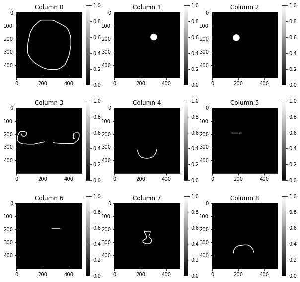

Week 8: Nonnegative Matrix Factorization
Chris Tralie
Building Up Data from Primitive Components
We saw with the PCA examples that it's possible to decompose data into different components that sum up to make a more complex whole. This is sometimes referred to as dictionary learning. We'll now consider a different way of learning such a dictionary. But first, we need to get more comfortable with matrix multiplication.
Click here to download an image processing example to warm us up. In this example, we have the following primitive 9 primitive 500x500 images, which we flatten and stack up into a 250,000 x 9 matrix W
Your challenge is to find a 9-element column matrix that, when multiplied on the left by W, gives a smiling, winking man with a handlebar moustache.
Nonnegative Matrix Factorization Theory
The goal of nonnegative matrix factorization is to approximate a matrix 𝑉 as the product of two other matrices 𝑊 and 𝐻; that is to get as close as possible to the matrix equation 𝑉 = 𝑊𝐻 being true. Solving this problem will allow us to learn the kinds of templates we saw above in data. The question itself, though, should already seem a little weird, because even if 𝑊, 𝐻, and 𝑉 are 1x1 matrices (i.e. ordinary nonnegative numbers), there can be infinitely many solutions. For instance, if I ask you how you could multiply two numbers together to get the number 12, you could do the following:
- 1 x 12 = 12
- 2 x 6 = 12
- 3 x 4 = 12
- 2.4 x 5 = 12
- ...
But surprisingly, when we do this with matrices, sometimes just finding one factorization will be quite useful. Crucially, though, we assume that all of the entries of 𝑊, 𝐻, and 𝑉 are nonnegative, which ends up allowing us to devise some simple iterative algorithms to solve this numerically in practice. There is some great theory in the above paper to show that these algorithms converge and are related to something else we'll be talking about: gradient descent. There is also other theory that characterizes probability distributions over the entries of the matrices we expect to get based on the different algorithms we choose (click here to see a paper about this). This is how we can characterize the solutions that we're more likely to get over a possibly infinite set of solutions.
The goal of today's exercise is to go through these algorithms in numpy. We'll start with some synthetic examples, but this will set the stage for some interesting applications. Even with the nonnegative constraint, we have plenty of applications. For instance, 𝑉 could represent a data matrix of 2D images as in the collection of MNIST digits. Or 𝑉 could represent something called a "spectrogram" of an audio signal. You'll explore these two applications in the next homework.
Formulation 1: Euclidean NMF
We seek a 𝑊 and an 𝐻 so that we minimize the loss function (or what you may have called the "objective" function in Math 111)
\[ L(W, H) = \sum_{i, j} (V[i, j]-WH[i, j])^2 \]
- First, randomly initialize 𝑊 and 𝐻 with nonnegative numbers
-
If 𝑉 is a 𝑀𝑥𝑁 matrix, and we choose a number 𝐾 which is the "rank" of our approximate factorization
- 𝑊 is a 𝑀𝑥𝐾 matrix
- 𝐻 is a 𝐾𝑥𝑁 matrix
- 𝑊𝑇 is called the "transpose" of 𝑊 ;it's simply switching the rows for the columns. It is a 𝐾𝑥𝑀 matrix
- 𝐻𝑇 would be a 𝑁𝑥𝐾
To solve this, you'll follow the multiplicative update rules below in sequence; that is, swap back and forth between the first step and the second step in a loop.
\[ H[i, j] = H[i, j] \frac{ (W^TV)[i, j] }{(W^TWH)[i, j]} \]
\[ W[i, j] = W[i, j] \frac{ (VH^T)[i, j] }{(WHH^T)[i, j]} \]
The original paper that presented this algorithm proved that the loss function only decreases at every iteration.
Your Task in Class:Implement the above rules in a loop to solve for 𝑊 and 𝐻. Keep track of the loss function at every iteration. When you plot it at the end, you should see that the loss is going down. How does K affect the error of what the algorithm converges to?
Your Next Task:Go back and load in all of the digits. Make the matrix V be the transpose of the 1-X for the data matrix, so that each column holds a unique digit and the digits are drawn in white on a black background instead of vice versa. Perform NMF on this matrix, and plot the columns of W as reshaped images. What do they look like? How do they change if you vary K? What if K = 10?
Formulation 2: Kullback-Liebler Divergence NMF
There are other loss functions we can use other than the sum of the squared differences of the entries of V and WxH. One of them is called the "Kullback-Liebler" loss, and it's defined as follows
\[ \sum_{i, j} \left( V[i, j] \left( \log \frac{V[i, j]}{WH[i, j]} \right) - V[i, j] + WH[i, j] \right) \]
Notice how, like the Euclidean loss, this loss is 0 if V = WxH. As it turns out, this loss will decrease under the following update rules
-
\[ V_L[i, j] = V[i, j] / (WH)[i, j] \]
-
\[ H[i, j] = H[i, j] \left( \frac{ (W^T V_L)[i, j] }{{\sum_a}W[a, j]} \right) \]
-
\[ V_L[i, j] = V[i, j] / (WH)[i, j] \]
-
\[ W[i, j] = W[i, j] \left( \frac{ (V_L H^T)[i, j] }{{\sum_b}H[i, b]} \right) \]
You will implement this on assignment 5